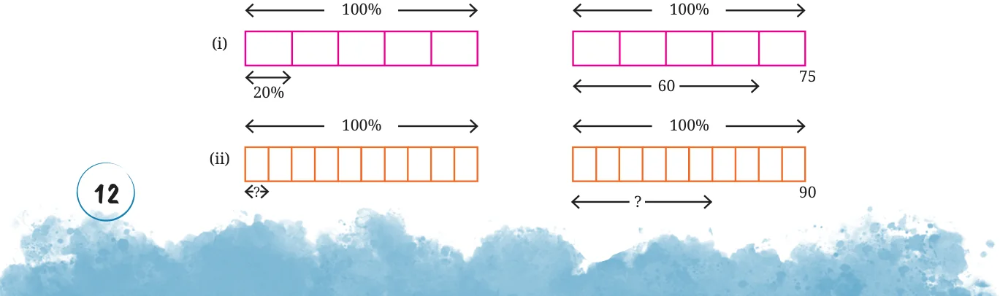
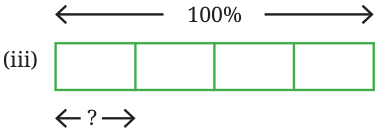
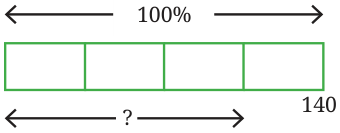

<!DOCTYPE html>
<html lang="en">
<head>
<meta charset="UTF-8">
<meta name="viewport" content="width=device-width,initial-scale=1">
<title>Figure it Out — Fractions in Disguise</title>
<meta name="description" content="Class 8 Mathematics · Part 2 · Fractions in Disguise · Figure it Out">
<link rel="icon" href="data:image/svg+xml,<svg xmlns='http://www.w3.org/2000/svg' viewBox='0 0 100 100'><text y='.9em' font-size='90'>📘</text></svg>">
<link rel="stylesheet" href="../../../assets/book.css">
<link rel="stylesheet" href="https://cdn.jsdelivr.net/npm/katex@0.16.11/dist/katex.min.css" crossorigin="anonymous">
</head>
<body>
<header class="topbar">
<div class="topbar-in">
  <div class="crumb">
    <span class="c1"><a href="../../../index.html">Library</a> · <a href="../../index.html">Class 8 Mathematics · Part 2</a></span>
    <span class="c2">Fractions in Disguise · Figure it Out</span>
  </div>
  <a class="tb-btn" data-nav="prev" href="../../01-fractions-in-disguise/07-percentages-greater-than-100/index.html" title="Percentages Greater than 100">←</a>
  <details class="drawer"><summary class="tb-btn" title="Sections in this chapter">☰</summary>
<div class="drawer-panel"><div class="dh">Fractions in Disguise</div><a href="../01-fractions-as-percentages-1.1/index.html">1.1 Fractions as Percentages</a><a href="../02-expressing-fractions-as-percentages/index.html">Expressing Fractions as Percentages</a><a href="../03-figure-it-out/index.html">Figure it Out</a><a href="../04-percentage-of-some-quantity-1.2/index.html">1.2 Percentage of Some Quantity</a><a href="../05-free-hand-computations/index.html">Free-hand Computations</a><a href="../06-the-fdp-trio-fractions-decimals-and-percentages/index.html">The FDP Trio — Fractions, Decimals, and Percentages</a><a href="../07-percentages-greater-than-100/index.html">Percentages Greater than 100</a><a href="../08-figure-it-out/index.html" aria-current="page">Figure it Out</a><a href="../09-using-percentages-1.3/index.html">1.3 Using Percentages; To Compare Proportions</a><a href="../10-percentage-increase-or-decrease/index.html">Percentage Increase or Decrease</a><a href="../11-taxes/index.html">Taxes</a><a href="../12-figure-it-out/index.html">Figure it Out</a><a href="../13-growth-and-compounding/index.html">Growth and Compounding</a><a href="../14-figure-it-out/index.html">Figure it Out</a><a href="../15-figure-it-out/index.html">Figure it Out</a><a href="../16-tricky-percentages/index.html">Tricky Percentages</a><a href="../17-figure-it-out/index.html">Figure it Out</a><a href="../18-summary/index.html">SUMMARY</a></div></details>
  <a class="tb-btn" data-nav="next" href="../../01-fractions-in-disguise/09-using-percentages-1.3/index.html" title="1.3 Using Percentages; To Compare Proportions">→</a>
  <button class="tb-btn" data-theme-toggle title="Toggle light / dark" aria-label="Toggle light or dark theme">◐</button>
</div>
<div class="progress"><span style="width:7.6%"></span></div>
</header>
<main class="wrap">
<div class="sec-head">
  <p class="eyebrow"><a href="../index.html">Chapter 1 · Fractions in Disguise</a></p>
  <h1>Figure it Out</h1>
  <p class="sec-meta">Textbook pages 12–14 · 12 figures</p>
</div>
<article class="prose">
<p>Estimate first before making any computations to solve the following questions. Try different methods including mental computations.</p>
<ul class="qlist">
<li><span class="mk">1.</span><span class="lt">Find the missing numbers. The first problem has been worked out.</span></li>
</ul>
<figure class="fig table-fig wide"></figure>
<figure class="fig wide"></figure>
<figure class="fig"></figure>
<figure class="fig side-fig"></figure>
<ul class="qlist">
<li><span class="mk">2.</span><span class="lt">Find the value of the following and also draw their bar models.</span></li>
<li><span class="mk">(i)</span><span class="lt">25% of 160 (ii) 16% of 250 (iii) 62% of 360</span></li>
<li><span class="mk">(iv)</span><span class="lt">140% of 40 (v) 1% of 1 hour (vi) 7% of 10 kg</span></li>
<li><span class="mk">3.</span><span class="lt">Surya made 60 ml of deep orange paint, how much red paint did he</span></li>
</ul>
<p>use if red paint made up \(\frac{3}{4}\) of the deep orange paint?</p>
<ul class="qlist">
<li><span class="mk">4.</span><span class="lt">Pairs of quantities are shown below. Identify and write appropriate</span></li>
</ul>
<p>symbols ‘&gt;’, ‘&lt;’, ‘=’ in the boxes. Visualising or estimating can help. Compute only if necessary or for verification.</p>
<ul class="qlist">
<li><span class="mk">(i)</span><span class="lt">50% of 510 50% of 515 (ii) 37% of 148 73% of 148</span></li>
<li><span class="mk">(iii)</span><span class="lt">29% of 43 92% of 110 (iv) 30% of 40 40% of 50</span></li>
<li><span class="mk">(v)</span><span class="lt">45% of 200 10% of 490 (vi) 30% of 80 24% of 64</span></li>
<li><span class="mk">5.</span><span class="lt">Fill in the blanks appropriately:</span></li>
<li><span class="mk">(i)</span><span class="lt">30% of k is 70, 60% of k is _____, 90% of k is _____, 120% of k</span></li>
</ul>
<p>is ______.</p>
<ul class="qlist">
<li><span class="mk">(ii)</span><span class="lt">100% of m is 215, 10% of m is _____, 1% of m is ______, 6% of m</span></li>
</ul>
<p>is ______.</p>
<ul class="qlist">
<li><span class="mk">(iii)</span><span class="lt">90% of n is 270, 9% of n is ______, 18% of n is _____, 100% of n</span></li>
</ul>
<p>is ______.</p>
<ul class="qlist">
<li><span class="mk">(iv)</span><span class="lt">Make 2 more such questions and challenge your peers.</span></li>
<li><span class="mk">6.</span><span class="lt">Fill in the blanks:</span></li>
<li><span class="mk">(i)</span><span class="lt">3 is ____ % of 300.</span></li>
<li><span class="mk">(ii)</span><span class="lt">_____ is 40% of 4.</span></li>
<li><span class="mk">(iii)</span><span class="lt">40 is 80% of _____.</span></li>
<li><span class="mk">7.</span><span class="lt">Is 10% of a day longer than 1% of a week? Create such questions</span></li>
</ul>
<p>and challenge your peers.</p>
<ul class="qlist">
<li><span class="mk">8.</span><span class="lt">Mariam’s farm has a peculiar bull. One day she gave the bull</span></li>
</ul>
<figure class="fig side-fig"></figure>
<p>2 units of fodder and the bull ate 1 unit. The next day, she gave the bull 3 units of fodder and the bull ate 2 units. The day after, she gave the bull 4 units and the bull ate 3 units. This continued, and on the 99th day she gave the bull 100 units and the bull ate 99 units. Represent these quantities as percentages. This task can be distributed among the class. What do you observe?</p>
<figure class="fig wide"></figure>
<figure class="fig wide"></figure>
<ul class="qlist">
<li><span class="mk">9.</span><span class="lt">Workers in a coffee plantation take 18 days to pick coffee berries in</span></li>
</ul>
<p>20% of the plantation. How many days will they take to complete the picking work for the entire plantation, assuming the rate of work stays the same? Why is this assumption necessary?</p>
<ul class="qlist">
<li><span class="mk">10.</span><span class="lt">The badminton coach has planned the training</span></li>
</ul>
<figure class="fig side-fig"></figure>
<p>sessions such that the ratio of warm up : play : cool down is 10% : 80% : 10%. If he wants to conduct a training of 90 minutes. How long should each activity be done?</p>
<ul class="qlist">
<li><span class="mk">11.</span><span class="lt">An estimated 90% of the world’s population lives in the Northern</span></li>
</ul>
<p>Hemisphere. Find the (approximate) number of people living in the Northern Hemisphere based on this year’s worldwide population.</p>
<ul class="qlist">
<li><span class="mk">12.</span><span class="lt">A recipe for the dish, halwa, for 4 people has the following</span></li>
</ul>
<p>ingredients in the given proportions - Rava: 40%, Sugar: 40%, and Ghee: 20%.</p>
<ul class="qlist">
<li><span class="mk">(i)</span><span class="lt">If you want to make halwa for 8 people, what is the proportion</span></li>
</ul>
<p>of each of the above ingredients?</p>
<ul class="qlist">
<li><span class="mk">(ii)</span><span class="lt">If the total weight of the ingredients is 2 kg, how much rava,</span></li>
</ul>
<p>sugar and ghee are present?</p>
</article>
<nav class="pager"><a class="" data-nav="prev" href="../../01-fractions-in-disguise/07-percentages-greater-than-100/index.html"><span class="dir">← Previous</span><span class="t">Percentages Greater than 100</span><span class="ch">Fractions in Disguise</span></a><a class="nx" data-nav="next" href="../../01-fractions-in-disguise/09-using-percentages-1.3/index.html"><span class="dir">Next →</span><span class="t">1.3 Using Percentages; To Compare Proportions</span><span class="ch">Fractions in Disguise</span></a></nav>
</main><footer class="site">Generated from the source textbook PDFs · text, figures and exercises belong to their respective publishers.</footer><script defer src="https://cdn.jsdelivr.net/npm/katex@0.16.11/dist/katex.min.js" crossorigin="anonymous"></script>
<script defer src="https://cdn.jsdelivr.net/npm/katex@0.16.11/dist/contrib/auto-render.min.js" crossorigin="anonymous"
  onload="renderMathInElement(document.body,{delimiters:[
    {left:'\\(',right:'\\)',display:false},
    {left:'$$',right:'$$',display:true},
    {left:'\\[',right:'\\]',display:true}],throwOnError:false,ignoredTags:['script','noscript','style','textarea','pre','code']})"></script>
<script src="../../../assets/book.js"></script>
<script defer src="../../../../assets/search.js"></script>
<script defer src="../../../../assets/screenshot.js"></script>
</body>
</html>
